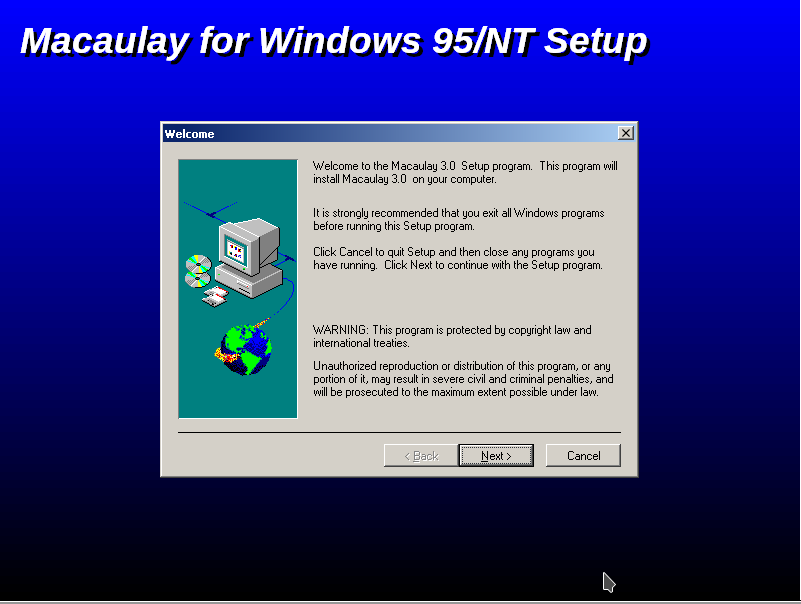
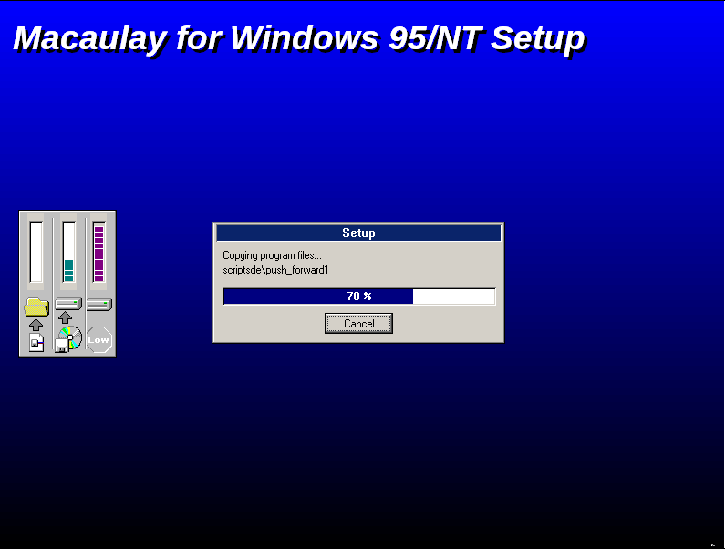
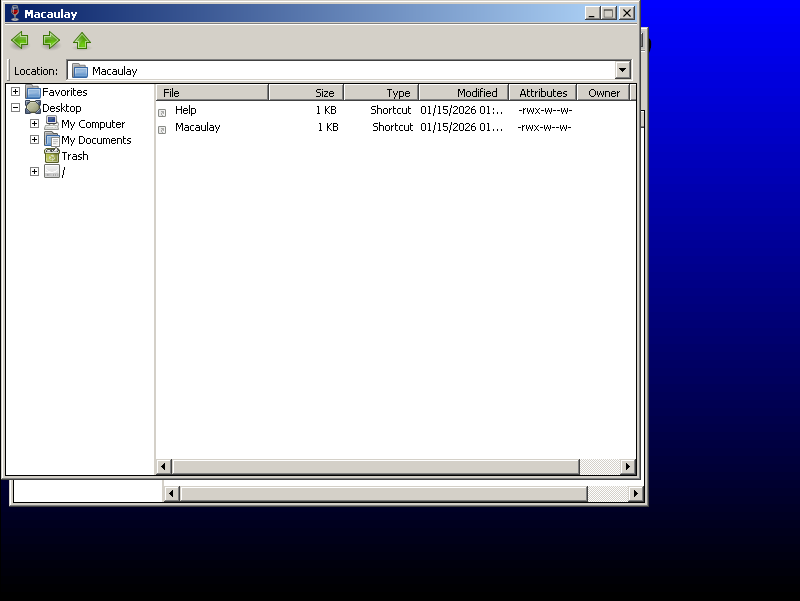
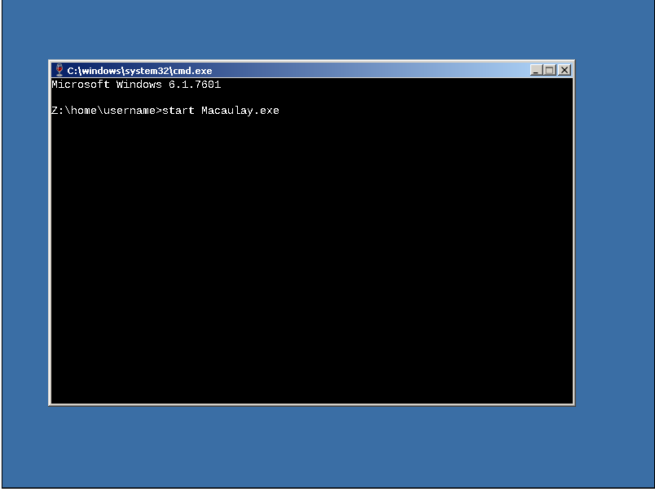
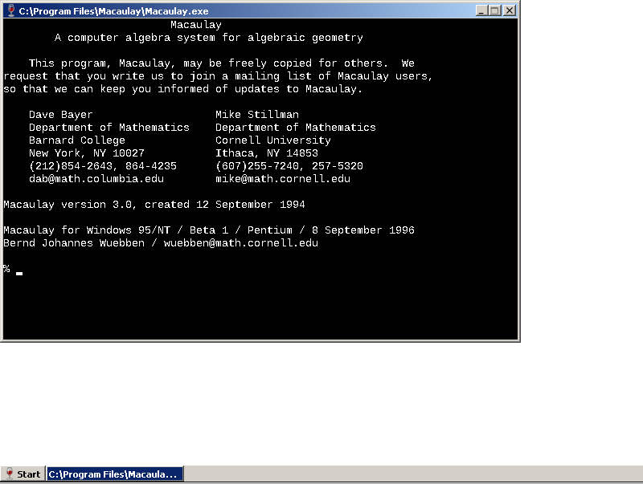

1. First Click this link to start the installer.
2. Follow the install instructions.
3. After the installation is finished, it will pop up multiple windows.
4. Then Click this link and type start Macaulay.exe in the terminal.
5. Macaulay should start.
